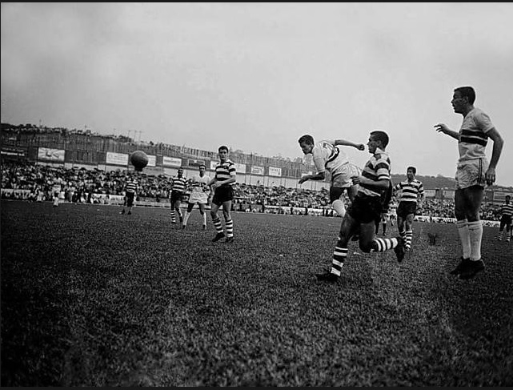
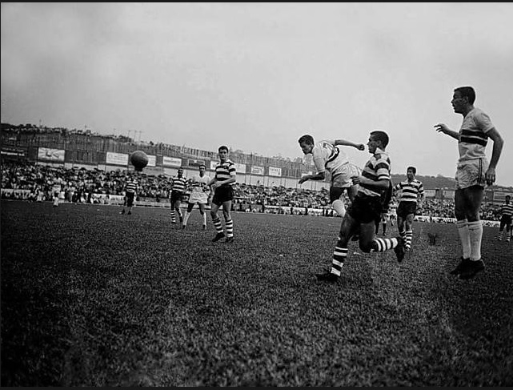
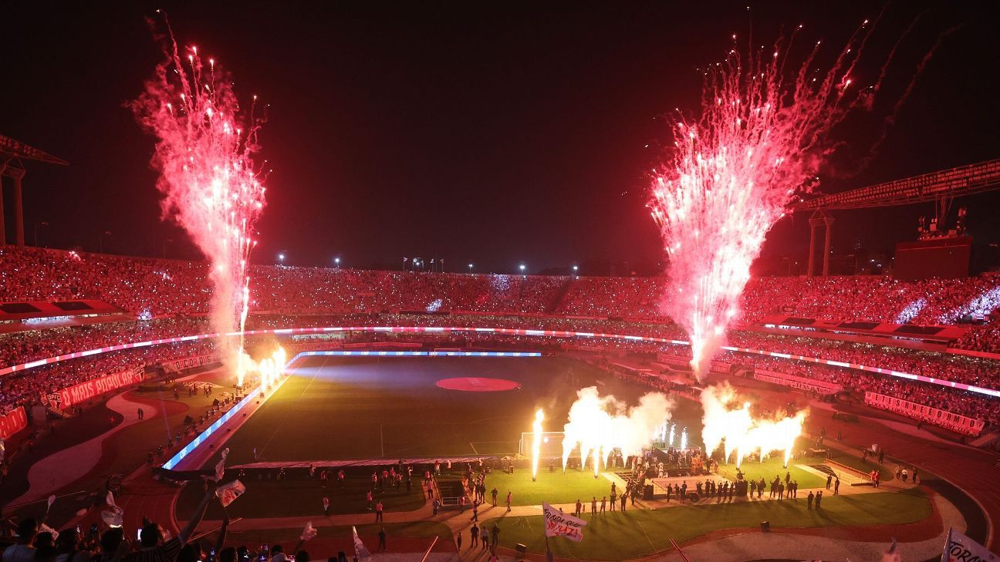
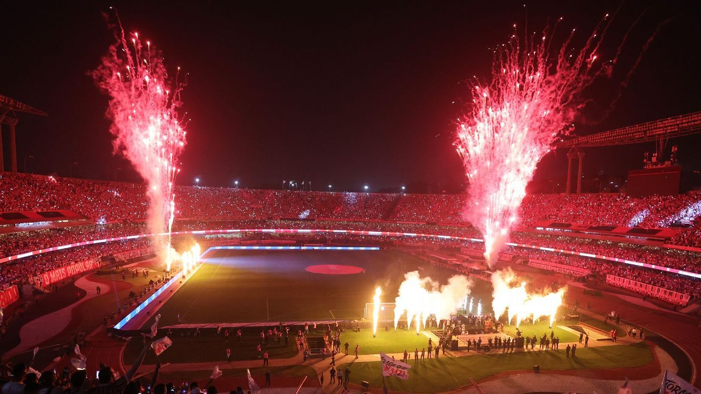
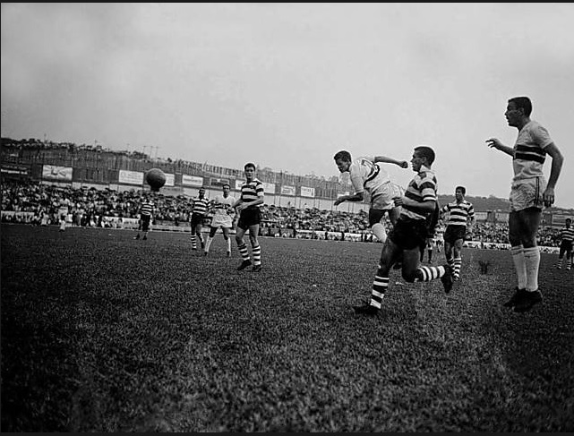
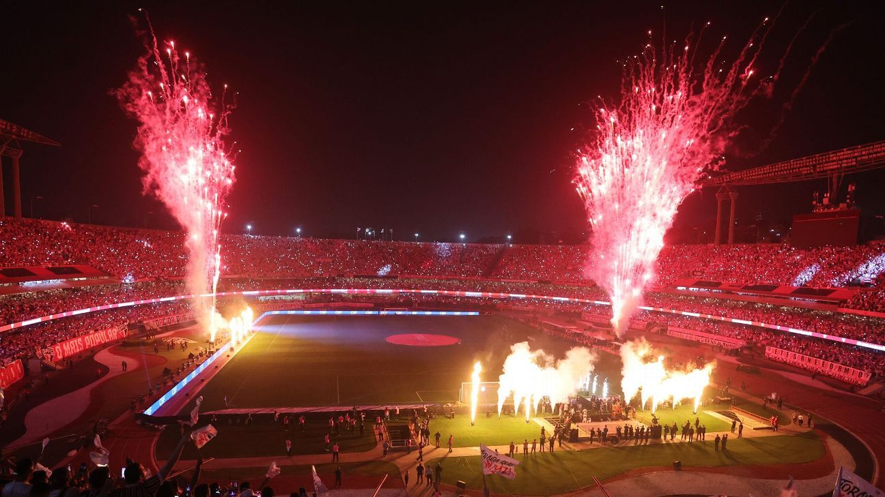

 

Explore a evolução do Estádio do Morumbi através das décadas. Esta galeria traz registros históricos desde a construção, passando pela conclusão da obra, até os dias atuais. Reviva momentos que marcaram a trajetória desse ícone esportivo e cultural de São Paulo.

